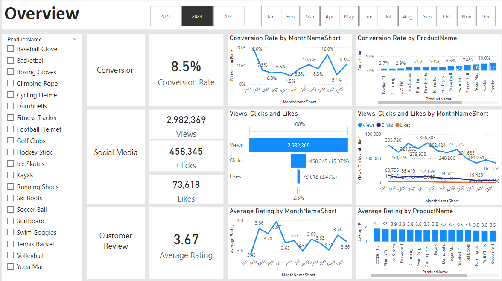

Market Analysis
This project involves designing an advanced, interactive dashboard in Power BI to analyze marketing performance using SQL. The goal is to uncover key insights to improve conversion rates, enhance customer engagement, and refine product feedback. By identifying visitor drop-off points, analyzing content interaction, and highlighting trends in customer reviews, the dashboard provides actionable recommendations for optimizing marketing strategies

This project involves building an advanced, interactive tool in Power BI to explore and analyze a dataset of over 4,000 LEGO sets. As an avid LEGO collector, the goal is to identify the perfect set based on specific criteria such as theme, number of pieces, age range, and price.
This project involves developing an interactive Tableau dashboard to visualize customer reviews for British Airlines. The dashboard highlights ratings across key metrics. This project showcases expertise in creating intuitive visualizations to present data effectively and improve user understanding.